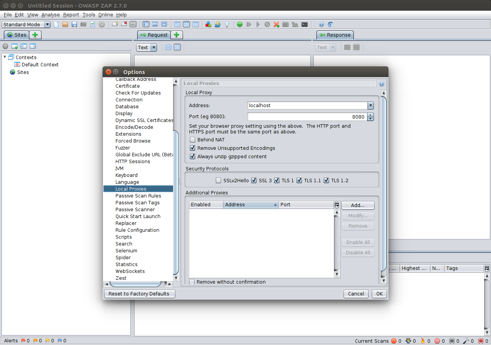
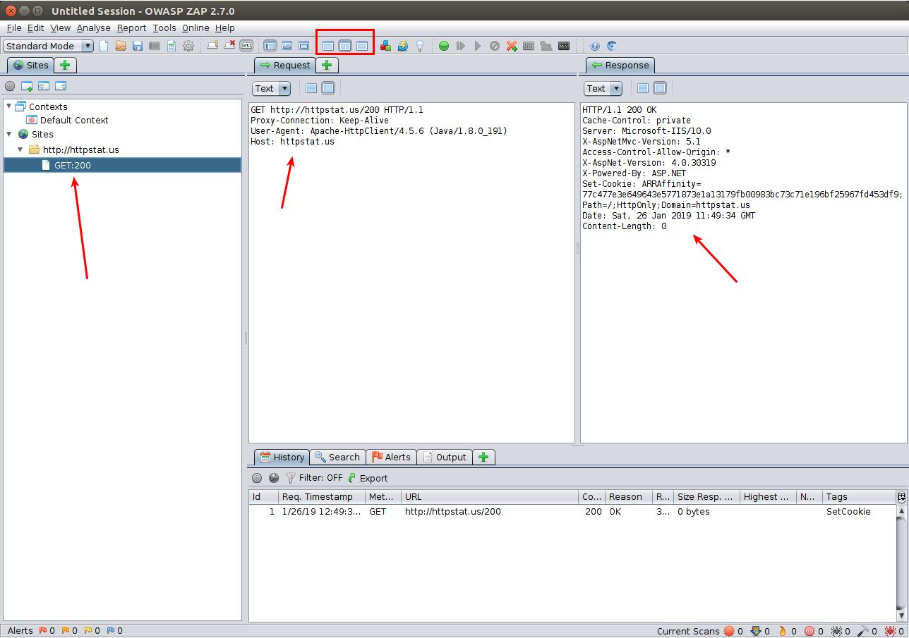
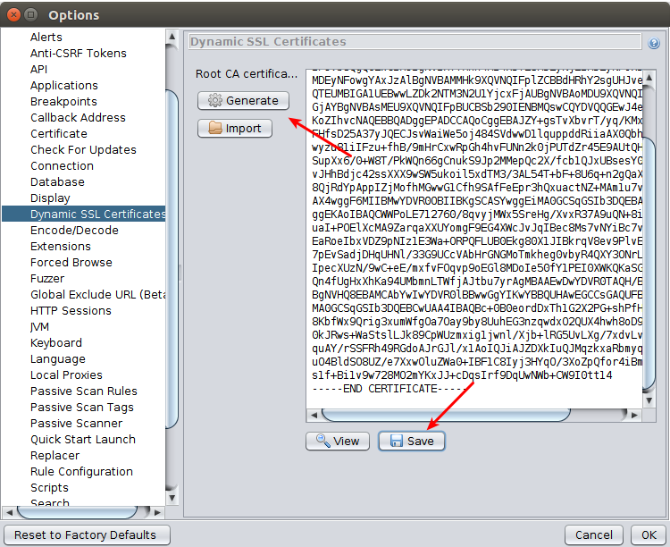
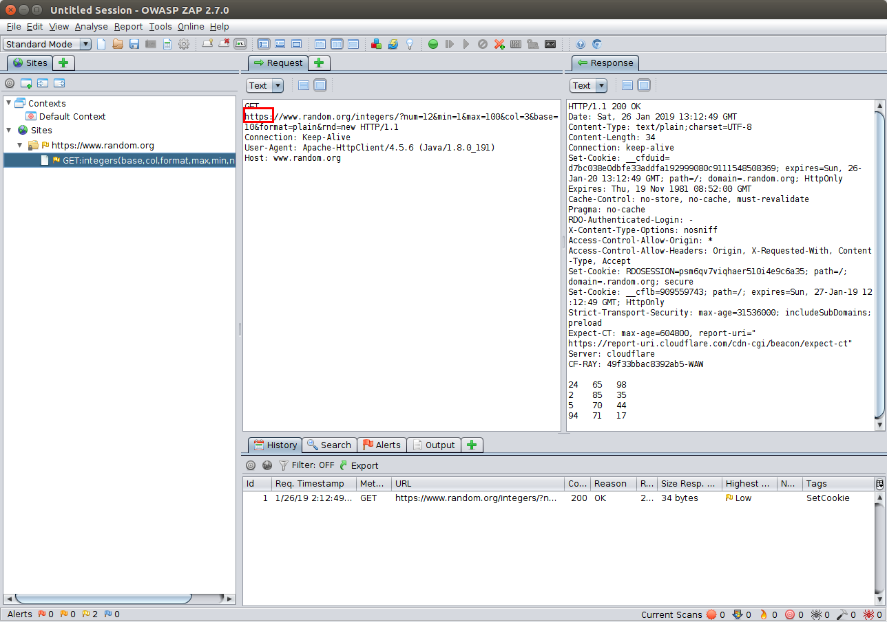

We start by downloading Owasp ZAP proxy:
$ # Download and unpack...
$ curl -O -J -L https://github.com/zaproxy/zaproxy/releases/download/2.7.0/ZAP_2.7.0_Linux.tar.gz
$ tar xvzf ZAP_2.7.0_Linux.tar.gz
$ # Run ZAP proxy...
$ ./ZAP_2.7.0/zap.sh By default ZAP listens on localhost:8080. You can change default address
and port by going into Tools -> Options -> Local Proxies tab:

To test that network traffic interception works, we will use a simple Java app:
public static void main(String[] args) throws IOException {
CloseableHttpClient client = HttpClientBuilder.create()
.useSystemProperties()
.build();
try {
String status = client
.execute(new HttpGet("http://httpstat.us/200"))
.getStatusLine()
.toString();
System.out.println(status);
}
finally {
client.close();
}
}There are few things to notice:
- We use Apache HttpClient to perform http requests.
- By default Apache HttpClient do not use proxy servers,
even if you set ZAP as a system wide proxy. We will deal
with this problem later. For now we will use
useSystemProperties()method onHttpClientBuilderclass that will enable proxy support. - Right now we will concentrate on intercepting HTTP traffic. I will show you how to deal with HTTPS connections later.
If we, now, run our application, we will notice that ZAP did not intercept any traffic:
$ java -jar ./build/libs/zapproxydemo-1.0-SNAPSHOT.jar
HTTP/1.1 200 OKIndeed right now our application does not know that it should use a proxy server. We may force it to use a proxy via JVM command line parameters:
$ java -Dhttp.proxyHost=127.0.0.1 \
-Dhttp.proxyPort=8080 \
-Dhttps.proxyHost=127.0.0.1 \
-Dhttps.proxyPort=8080 \
-jar ./build/libs/zapproxydemo-1.0-SNAPSHOT.jar or by dynamicaly setting system properties in code:
System.setProperty("http.proxyHost", "127.0.0.1");
System.setProperty("http.proxyPort", "8080");
System.setProperty("https.proxyHost", "127.0.0.1");
System.setProperty("https.proxyPort", "8080");Whatever method you use, if you run the application again,
you should be able to see now a single intercepted request in ZAP:

You can remove previously recorded requests in ZAP by pressing Ctrl+N.
Intercepting traffic from proxy unfriendly apps
As I mentioned previously, Apache HttpClient ignores
proxy settings by default.
If we create our HttpClient using create() method:
public static void main(String[] args) throws IOException {
CloseableHttpClient client = HttpClientBuilder.create()
.build();
try {
String status = client
.execute(new HttpGet("http://httpstat.us/200"))
.getStatusLine()
.toString();
System.out.println(status);
}
finally {
client.close();
}
}HttpClient will ignore proxy settings no matter how we set them.
For dealing with cases like this, we may use
proxychains-ng.
This project is a new reincarnation of old
proxychains util which is no
longer maintained.
Please be aware of this difference. On my system apt-get install proxychains
installs proxychains and not proxychains-ng that we need here.
To install proxychains-ng I needed to download sources from GitHub
and compile them myself:
$ # Checkout tag v4.13
$ git clone --branch v4.13 git@github.com:rofl0r/proxychains-ng.git
$ cd proxychains-ng
$ ./configure
$ # If there are no errors from configure script
$ make
$ ./proxychains4 --help
Usage: ./proxychains4 -q -f config_file program_name [arguments]
-q makes proxychains quiet - this overrides the config setting
-f allows one to manually specify a configfile to use
for example : proxychains telnet somehost.com
More help in README file
$ # Install system wide...
$ sudo make installWe also need to change default proxychains-ng configuration:
sudo vim /etc/proxychains.conf
# Comment out line:
# proxy_dns
# Change ProxyList to:
[ProxyList]
http 127.0.0.1 8080Now if we run our application using proxychains:
$ proxychains4 java -jar ./build/libs/zapproxydemo-1.0-SNAPSHOT.jar
[proxychains] config file found: /etc/proxychains.conf
[proxychains] preloading /usr/local/lib/libproxychains4.so
[proxychains] DLL init: proxychains-ng 4.13-git-10-g1198857
[proxychains] Strict chain ... 127.0.0.1:8080 ... 23.99.0.12:80 ... OK
HTTP/1.1 200 OKWe will be able to intercept traffic using ZAP.
One of the limitations of proxychains is that it may not work for subprocesses. If you app launches other applications they may not be proxied at all.
Intercepting HTTPS traffic
So far, so good, but what will happen if we try to intercept HTTPS traffic from a new, more secure, example:
public static void main(String[] args) throws IOException {
System.setProperty("http.proxyHost", "127.0.0.1");
System.setProperty("http.proxyPort", "8080");
System.setProperty("https.proxyHost", "127.0.0.1");
System.setProperty("https.proxyPort", "8080");
CloseableHttpClient client = HttpClientBuilder.create()
.useSystemProperties()
.build();
String url = "https://www.random.org/integers/?num=12&min=1&max=100&col=3&base=10&format=plain&rnd=new";
try {
HttpEntity entity = client
.execute(new HttpGet(url))
.getEntity();
String responseBody = EntityUtils.toString(entity);
System.out.println(responseBody);
}
finally {
client.close();
}
}We will get an exception similar to:
Exception in thread "main" javax.net.ssl.SSLHandshakeException:
sun.security.validator.ValidatorException: PKIX path building failed:
sun.security.provider.certpath.SunCertPathBuilderException: unable
to find valid certification path to requested targetWe get this exception because certificate returned by ZAP proxy is not trusted. To fix this problem we must generate a new ZAP root cert and add it (temporarily) to Java keystore.
Generate a new cert and save it somewhere (Tools -> Options -> Dynamic SSL Certificates):  Don’t forget to click OK.
Then add ZAP root certificate to Java keystore:
$ cd $JAVA_HOME/jre/lib/security
$ pwd
/usr/lib/jvm/java-8-oracle/jre/lib/security
$ # You should see cacerts file in this directory.
$ # Create a backup
$ sudo cp cacerts cacerts.bakup2019-01-26
$ # Add certificate to the store
$ sudo keytool -importcert \
-alias zap-proxy.org \
-file ~/owasp_zap_root_ca.cer \
-keystore cacerts
$ # When asked about keystore password
$ # write: changeit (the default password)If we run our app again, we will be able to intercept an HTTPS request: 
This again should work with proxychains-ng.
Sometimes to make it work you will have to uncommend proxy_dns
option in /etc/proxychains.conf file, that I earlier said to
comment out. Why is this sometimes needed, to be honest, I don’t know but
it works this way…
For security reasons after you finished your debugging session, you should remove ZAP certificate from Java keystore:
$ cd $JAVA_HOME/jre/lib/security
$ # Make sure you see your cert
$ sudo keytool -list -v -keystore cacerts | grep zap-proxy.org
Enter keystore password: changeit
$ # Remove it
$ sudo keytool -delete -alias zap-proxy.org -keystore cacerts
$ # Make sure it's gone
$ sudo keytool -list -v -keystore cacerts | grep zap-proxy.org
Enter keystore password: changeitAlways generate a new ZAP proxy certificate before adding it to Java keystore. If you must do this often, I can advice you to create a script and/or bash alias to make entire process more convenient.